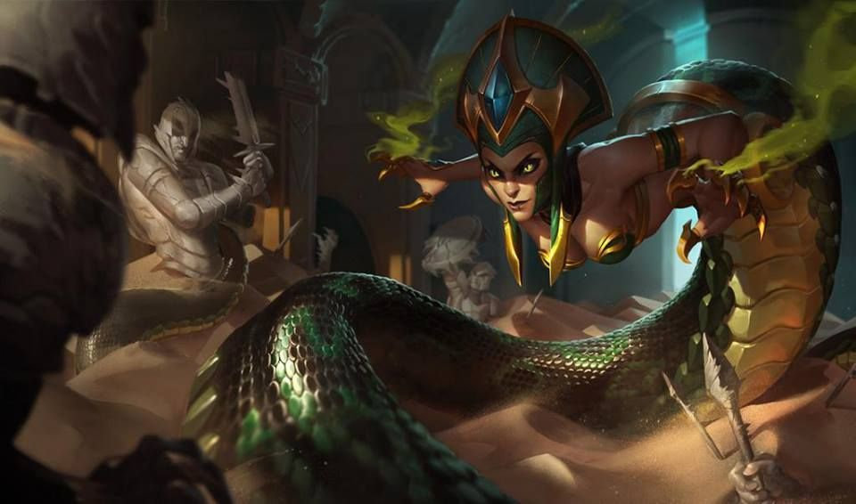

tu devrais essayer Cassiopea

cassiopea à la différence des autres mages, possède des sorts au délais de récupération court, cependant elle possède une portée très faible pour un mage et une mobilité quaisment négative, il faudra donc maitriser la bête pour l'utiliser éfficacement